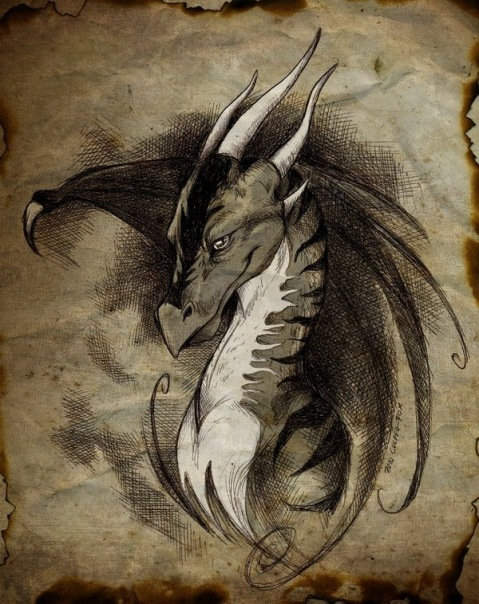
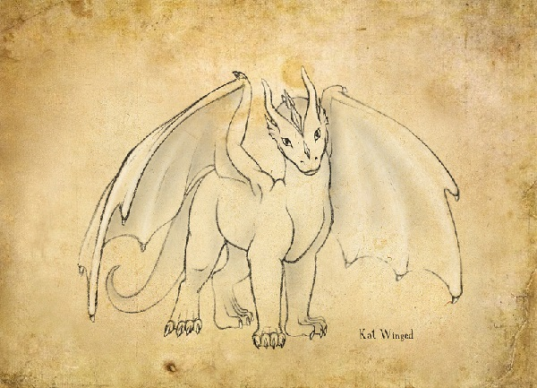
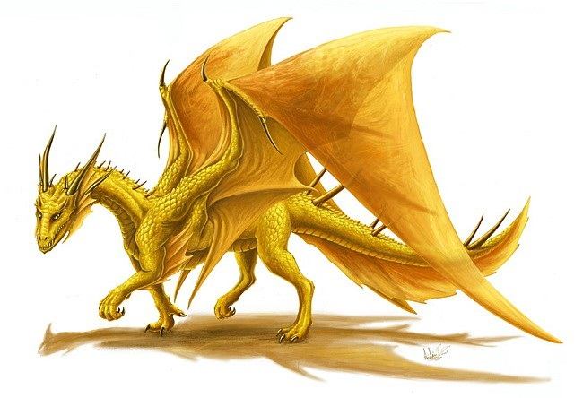

Добро пожаловать в нашу лесную обитель
Надеюсь, вам у нас понравиться=)
Регистрация
Драконы
Первые упоминания о драконах относятся к древнейшей шумерской культуре. В старинных преданиях встречаются описания дракона, как удивительного существа, не похожего ни на одно животное и в то же время имеющего сходство со многими из них. Согласно древним аккадским источникам, у дракона были лапы собаки, голова льва и крылья птицы. Образ дракона появляется почти во всех мифах о сотворении мира. Священные тексты древних народов отождествляют его с первозданной силой земли, изначальным Хаосом, который вступает в борьбу с Творцом. В этих космических битвах, как правило, побеждают силы или боги, олицетворяющие порядок и поддерживающие равновесие в мироздании, а из чудовища создается небосвод и поднебесный мир: "И рассек он ей внутренность, и пронзил сердце... и создал из одной половины твердь небесную, а из другой — твердь земную". В каждой стране поэты воспевали эту титаническую битву. В древнейшем вавилонском сказании "Энума элиш" говорится о борьбе бога Мардука с Тиамат, богиней первобытного космического океана. Один из богов ведического пантеона, Индра, побеждает дракона Вритру, семитский бог Баал — бога Йаму, владыку изначального океана. Широко известен и библейский сюжет о чудовище Левиафане, некогда побежденном Создателем.
Символ дракона — это эмблема воинов на парфянских и римских штандартах, национальная эмблема Уэльса, хранитель, изображенный на носах кораблей древних викингов. У римлян дракон был значком когорты, отсюда современное слово драгун (dragon). Символ дракона — символ высшей власти у кельтов, символ китайского императора: его лицо именовалось Лицом Дракона, а трон — Троном Дракона. На щите Агамемнона (11-я песнь "Илиады") был изображен синий трехглавый дракон. Легенды буддизма изобилуют упоминаниями о драконах, сказания даосизма повествуют об их деяниях. Драконы, в мифологии разных народов, это крылатые чудовища, в образах которых соединялись животные, воплощающие два мира — небес и земли — верхний (птицы) и нижний (змеи). Эти фантастические существа в китайской мифологии олицетворяли мужское начало, первоэлемент ян, вместе с фениксом, воплощающим женское начало, первоэлемент инь. Изображение дракона служило символом императора, а феникса — императрицы. В средневековой алхимии — первоматерия (или иначе мировая субстанция) обозначалась древнейшим алхимическим символом — змеей-драконом, кусающим себя за хвост и называющимся уроборос ("пожиратель хвоста"). Изображение уробороса сопровождали подписью "Все в Едином или Единое во всем". А Творение называли круговым (circulare) или колесом (rota). В Средневековье, при изображении дракона "заимствовали" разные части тела у различных животных, и, подобно сфинксу, дракон был символом единения четырех стихий. Один из наиболее распространенных мифологических сюжетов — сражение с драконом: герой, благодаря своей отваге, побеждает дракона, завладевает его сокровищами либо освобождает пленную принцессу. Этот сюжет рассказывает о двойственности природы человека, о внутреннем конфликте между светом и тьмой, о силах бессознательного, которые могут быть использованы для достижения как созидательных, так и разрушительных целей. Битва с драконом символизирует те трудности, которые человеку необходимо преодолеть, чтобы овладеть сокровищами внутреннего знания, одержать победу над своей низменной, темной природой и достичь самообладания. Подвиги Геракла, освобождение Андромеды Персеем, бой Ясона с драконом в сказании об аргонавтах, легенда о скандинавском герое Сигурде и его победе над драконом Фафниром, бой святого Георгия с драконом лишь некоторые тому примеры. Каждый из них дает свой совет, как сражаться с собственной тьмой. И хотя дракон, подобно египетскому Сету, причиняет жестокую боль, он помогает человеку познать себя. Драконы были символами могущественных богов, дающих жизнь: Кецалькоатля, бога утренней звезды, Атума, бога вечности, Сераписа, бога мудрости. Этот символ бесконечен, как бесконечен вечно развивающийся мир, охраняемый кольцом уробороса.



.jpg)